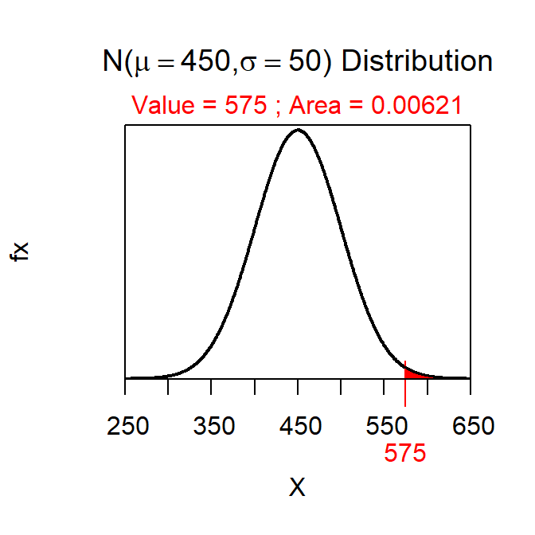

Wood Duck Weights
-
The percentage of wood ducks that weigh more than 575 g is 0.6%.
> distrib(575,mean=450,sd=50,lower.tail=FALSE)

-
The percentage of wood ducks that weigh less than 420 g is 27.4%.
> distrib(420,mean=450,sd=50)
-
The percentage of wood ducks that weigh betwen 360 and 480 g is 69.0%.
> ( ab <- distrib(480,mean=450,sd=50) )
[1] 0.7257469
> ( a <- distrib(360,mean=450,sd=50) )
[1] 0.03593032
> ab-a
[1] 0.6898166
-
The lightest 10% of wood ducks weigh less than 386 g.
> distrib(0.10,mean=450,sd=50,type="q")
-
The heaviest 25% of wood ducks weigh more than 484 g
> distrib(0.25,mean=450,sd=50,type="q",lower.tail=FALSE)